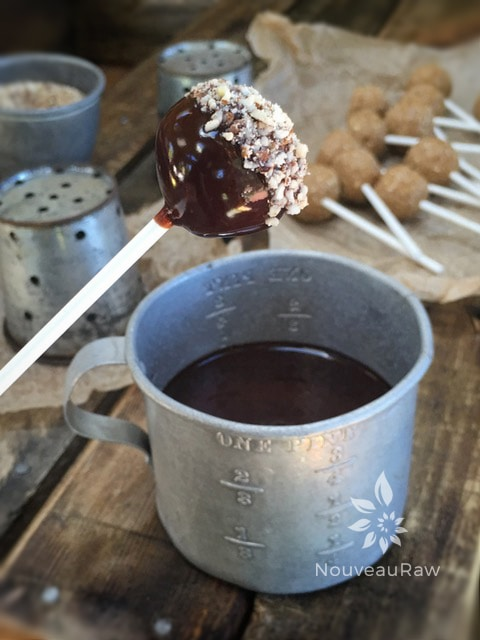
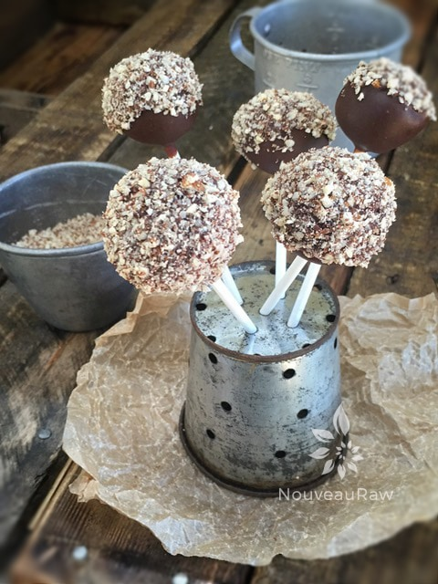
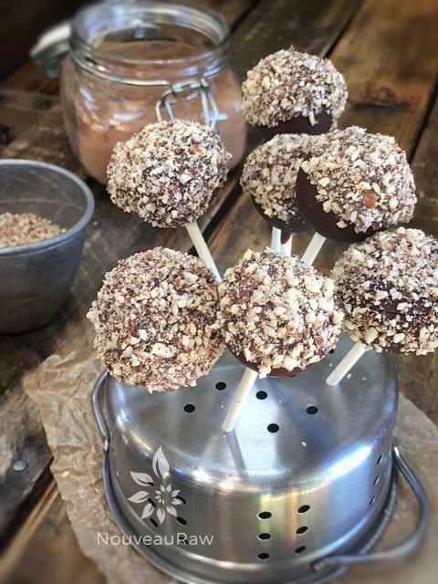
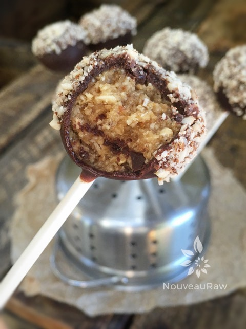

Chocolate Peanut Butter Pops

~ raw, gluten-free ~
Chocolate Peanut Butter Pops… Reese’s Peanut Butter cups morphed into raw balls of delight! This is one of my mother’s favorite combination’s.
At the age of 14 I started working in a grocery store and at the end of each shift I would call my mom and ask if I could bring anything home for her. She usually responded with, “Surprise me!” So, one day I brought home a Reese’s Peanut Butter Cup and a Pepsi. Not the healthiest choice but that was a loooong time ago.
Soon it became a tradition. When I called mom to see if she needed anything she would reply, “Bring me a combo!”
Now, today, both my mother and I eat healthier foods. I sort of miss those “combo days” but now I can reignite that tradition with this recipe! So this is for you mom. :) If you are allergic to peanuts you could substitute them with another nut, it just might change the flavor a bit and they will still be amazing!
Today is Mother’s Day so in honor of my lovely mother, whom I love and adore… I made a special bouquet for her, made out of her favorite combo… I had no idea that this little creation was going to happen as I was dipping these peanut butter balls into the chocolate, it literally kept unfolding with each step of the way during kitchen play time. I hope you enjoy this recipe. Blessings, amie sue
yields 42 (1 Tbsp worth each)
Pop center:
- 3 cups gluten-free oat flour
- 1 tsp Himalayan pink salt
- 1 cup natural peanut butter
- 1/4 cup raw agave nectar or maple syrup
- 1/4 cup raw honey
- 1 1/2 tsp vanilla extract
- 1/4 cup water
Hardening chocolate:
- 1/2 cup (100 g) raw cacao butter
- 6 Tbsp (37 g) raw cacao powder
- 1/4 cup maple syrup
- 1 pinch Himalayan pink salt
Preparation:
Pop center:
- In a food processor combine the oat flour and salt. Blitz together.
- Add the peanut butter, sweeteners, and vanilla. Process until it sticks together like a dough batter. Add water if needed.
- I used fresh ground natural peanut butter and a raw honey that is very thick. These consistencies will determine how much if any water is needed.
- You may need to stop a few times and scrap the sides and spread the dough around evenly.
- This batter is very sticky and may require being placed in the freezer to help firm up for ball rolling.
- If the batter appears too dry, add 1 tbsp of coconut oil. This all depends on the peanut butter you use.
- Form balls using a 1 Tbsp sized ice cream scoop. Roll in the palms of your hands and place on a cookie sheet.
- Insert a skewer stick about 1/2 way into the ball and place them in the freezer when done while you prepare the chocolate.
- You could also make the balls ahead of time and just keep them in the freezer until you are ready to use them.
Hardening Chocolate:
- WARNING….Be prepared with all your tools prior to starting the chocolate.
- You will want to create a double boiler to melt the cacao butter or you can melt it in the dehydrator set at 115 degrees (F).
- If using a double boiler, DO NOT allow water drops to get into the pan, it can seize up the batter. If that happens don’t throw it away, use it in another creation but you will need to start over for the dipping chocolate.
- Melt the cacao butter in a glass or stainless steel bowl, until it is in liquid form.
- Once the cacao butter is melted add the cacao powder, whisk all the lumps away.
- Add maple syrup and salt. Whisk together.
- Holding on to the skewer stick I dip the ball into the chocolate and gently tap the stick on the edge of the pan to get the excess chocolate off. Be patient.
- Dip in crushed almonds or shredded coconut if desired.
- Place the skewer stick into a holder and continue the process with the remaining balls.
- For a holder, you can use a block of floral foam to poke the sticks into or you can tip a colander over and slid the sticks into the holes. If you use popsicle sticks, just set them upright on parchment paper to dry.
- Once done, place in the fridge for 10 minutes. This will help to firm them up and create a cool surface for the second coating.
- You can repeat this process as many times as you wish. The more coatings, the thicker the chocolate will be on the ball.
- Store in airtight containers. They can be left at room temp for a few hours, placed in the fridge for 1-2 weeks or frozen for 1 month.

Dip the ball into chocolate, then roll in crushed nuts or coconut.

Use some sort of colander for a base to hold them while drying.

Just showing you another colander that I used during the drying process.

Because every one wants to know what they look like inside.
© AmieSue.com